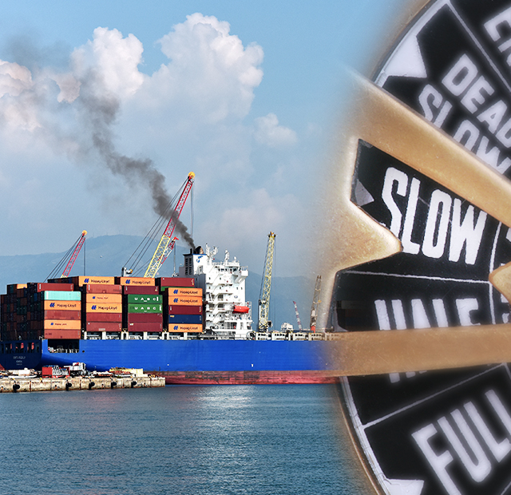

와 제 롤모델이 잡스에요!!! 아이폰 첫 출시되고 나서부터 계속 아이폰 쓰고 있는데 잡스가 너무 그리워요ㅠㅠ 지금은 돈만 벌려고 하는 것 같아서 디자인 발전도 없고ㅠㅠ와 제 롤모델이 잡스에요!!! 아이폰 첫 출시되고 나서부터 계속 아이폰 쓰고 있는데 잡스가 너무 그리워요ㅠㅠ 지금은 돈만 벌려고 하는 것 같아서 디자인 발전도 없고ㅠㅠ와 제 롤모델이 잡스에요!!! 아이폰 첫 출시되고 나서부터 계속 아이폰 쓰고 있는데 잡스가 너무 그리워요ㅠㅠ 지금은 돈만 벌려고 하는 것 같아서 디자인 발전도 없고ㅠㅠ와 제 롤모델이 잡스에요!!! 아이폰 첫 출시되고 나서부터 계속 아이폰 쓰고 있는데 잡스가 너무 그리워요ㅠㅠ 지금은 돈만 벌려고 하는 것 같아서 디자인 발전도 없고ㅠㅠ와 제 롤모델이 잡스에요!!! 아이폰 첫 출시되고 나서부터 계속 아이폰 쓰고 있는데 잡스가 너무 그리워요ㅠㅠ 지금은 돈만 벌려고 하는 것 같아서 디자인 발전도 없고ㅠㅠ
Market Report
Low-sulfur rule to bring back ocean slow steaming
Low-sulfur rule to bring back ocean slow steaming

Greg Knowler,
JOC Senior Editor at IHS Markit
Shippers already grappling with a lack of ocean reliability should expect even longer transits come 2020 when carriers work to mitigate the higher fuel costs of the low-sulfur mandate via slow-steaming, forcing beneficial cargo owners (BCOs) to increase lead time and carry more inventory.
APL confirmed this week at TPM Asia in Shenzhen that slowing ships would be a strategy employed to cope with the cost of using a fuel that is expected to be 50 percent more expensive than the current high-sulfur variant. The carrier joins Maersk Line, which in September told JOC’s Container Trade Europe Conference in Hamburg that it would also be placing slow-steaming back on the menu.
“The reality is that we are being suddenly exposed to $15 billion in additional spend, so we have to reduce consumption and try to convince customers to pay more,” APL CEO Nicolas Sartini told JOC.com.
“There is a lot of uncertainty, but when we talk to our oil vendors they tell us we have to be prepared for an additional cost of between $250 and $350 per ton above the $500 per ton we pay today. So faced with such a situation, the first thing is to work out how to reduce the fuel consumption. Option one is to spend less time in port to increase the operating time and the other option is to reduce speed. Once we have done that we will try to share the additional costs with our customers.”
One of the first indications that slow-steaming was going to make a comeback was given in Hamburg, where Maersk Line Europe CEO Karsten Kildahl said slowing down ships would help the carrier manage the estimated $2 billion low-sulfur fuel would add to its annual costs.
“With low sulfur, you’re back to [the] trigger point of slow-steaming,” he told the Hamburg event. “It completely changes the math of what it takes to consider slow steaming. There’s no way we can foot a $2 billion bill. But we can’t ignore that slow steaming comes completely back into play now.”
Kildahl said there was no slow steaming going on today. “A 19,000-TEU vessel spends one week more in port than a 12,000-TEU vessel, therefore every ship is going full speed.”
Reviving the unpopular practice of slow-steaming, which increases lead and transit time for shippers, is adding fuel to the fire already raging around new low-sulfur bunker adjustment factor (BAF) formulas that were recently announced by four global carriers. Maersk Line, Mediterranean Shipping Co., CMA CGM and most recently Hapag-Lloyd, unveiled their fuel surcharge formulas to a market that is deeply distrustful of carrier surcharges.
The rule, imposed by the International Maritime Organization (IMO), will reduce permissible sulfur emissions from vessels to 0.5 percent from 3.5 percent beginning on Jan. 1, 2020.
Key: finding the right formula
Finding the right formula that is accepted by all shippers and carriers will be a crucial piece of the puzzle because, according to Hapag-Lloyd calculations, the regulation could add $184 to $264 per TEU, depending on the prevailing price of fuel. CMA CGM has put the cost per TEU at $160.
Hapag-Lloyd estimated that the low-sulfur fuel requirements for shipping from 2020 would add more than a billion to its annual costs, and Maersk said the $2 billion a year would add 35 percent to its 2018 fuel bill and 8 percent to its total costs. CMA CGM expects bunker costs to rise by $1.5 billion, adding 58 percent to its 2017 fuel bill and 8 percent to total costs, and MSC is predicting an additional cost of more than $2 billion a year.
Rolf Habben Jansen, CEO of Hapag-Lloyd, said the stricter regulation would create additional costs. “This will be mainly reflected in the fuel bills for low-sulfur fuel oil, as there is no realistic alternative for the industry remaining complaint by 2020,” he said.
“We have developed a system for our customers that we think is fair, as it allows for a causal, transparent, and easy to understand calculation of fuel costs.”
But a key complaint of shippers is that the BAFs are too complicated, not transparent enough, and revenue-generating mechanisms that are an inaccurate reflection of the fluctuating fuel price. When this was put to Sartini, his response was that with the huge increase in operating costs coming from 2020, carriers simply had no choice but to get the support of customers on the new formula.
“We know that there is only one way to do this, and that is to be transparent. There is so much at stake that we have to be very clear with our customers and give them the data that they can research for themselves,” he said.
“It will depend on a customer-by-customer basis. Those customers dealing with a lot of carriers will probably try to unify it in one formula. But at the end of the day, the formula will probably converge into quite similar numbers as those of the carriers.”
-
Great
322
-
Like
322
-
Sad
322
-
So-so
322
-
Angry
322